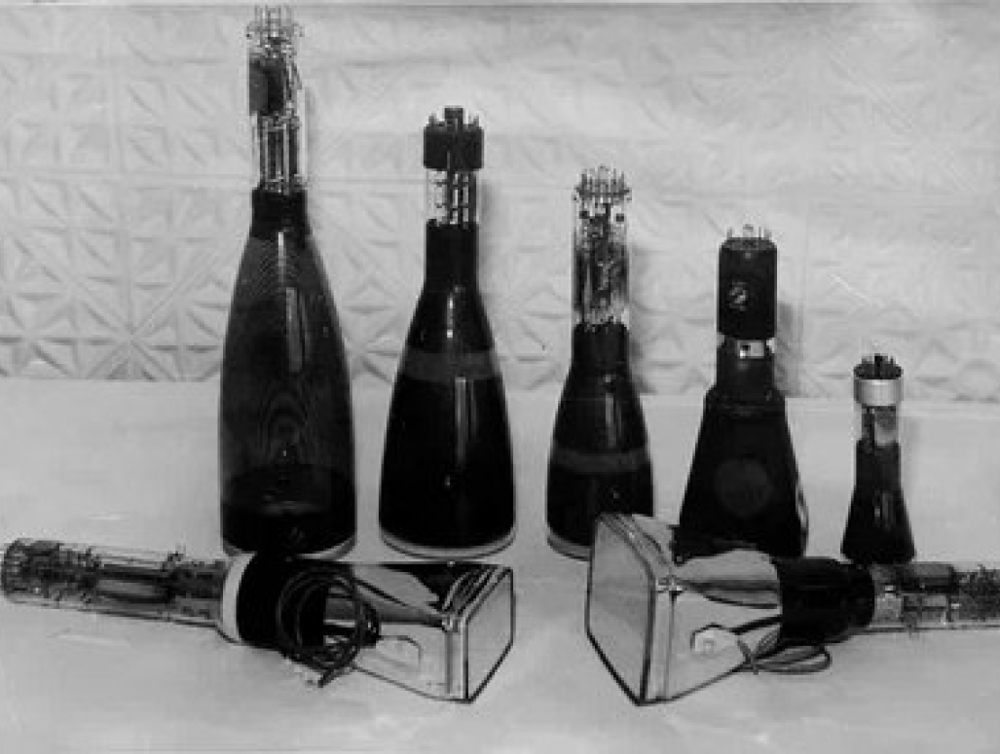
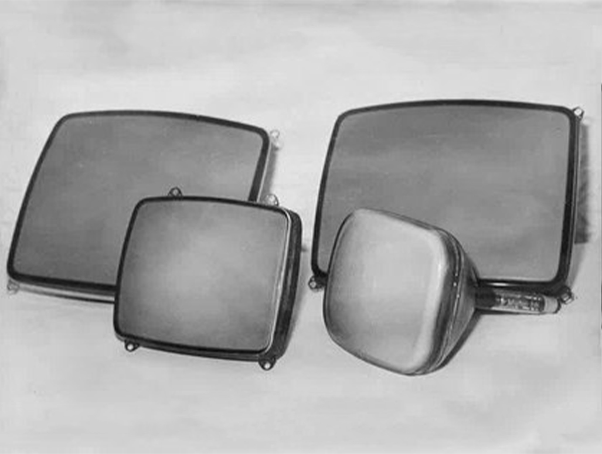
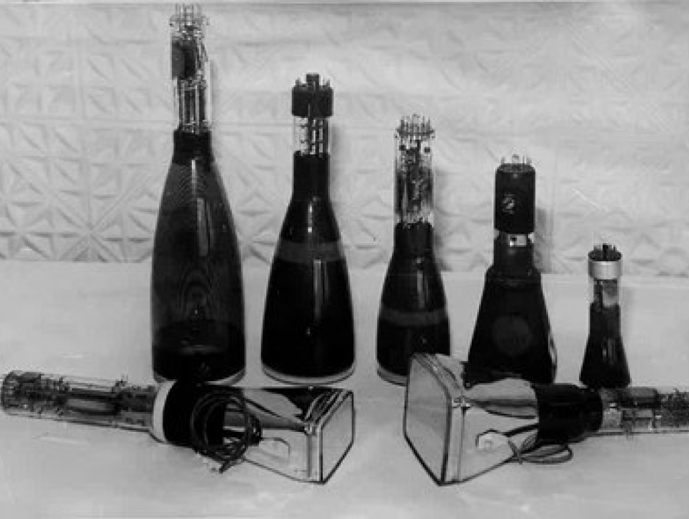
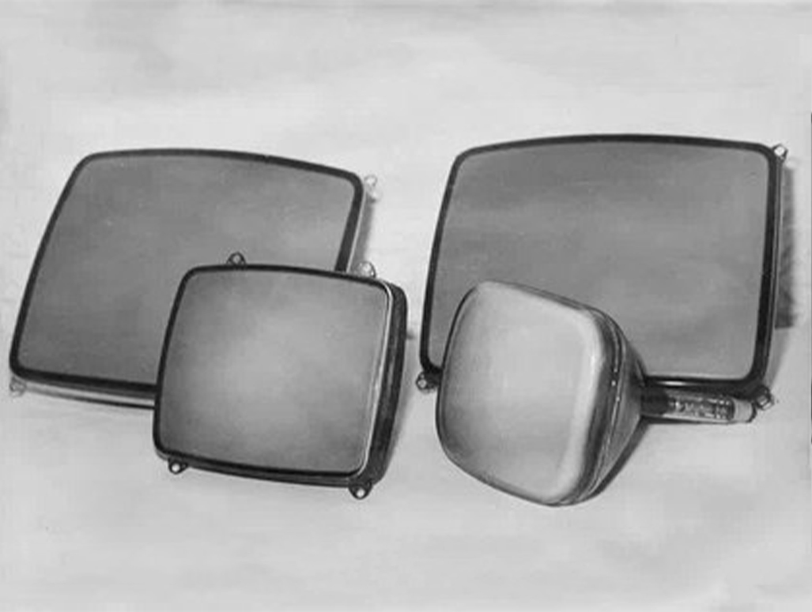
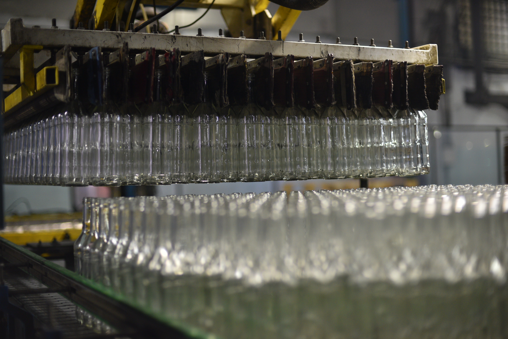
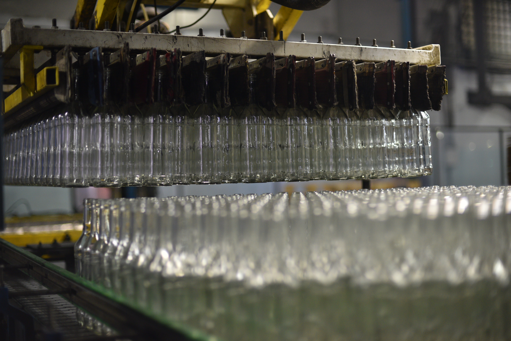

- Завод «Экран» начал работать в 1954 году — выпускать электронно-оптические приборы для радиолокации и телевидения
- В середине 90-х на «Экране» приступили к изготовлению стеклотары
- С 2002 года управление ОАО «Завод «Экран» перешло к РАТМ Холдингу
В 2005 году президент РАТМ Холдинга Эдуард Таран принял стратегическое решение — реструктуризировал направления деятельности, разделив «Экран» на два предприятия, поскольку кадры, технологии и подготовка производства у них отличаются
В АО «Экран-оптические системы» (ЭОС) сосредоточили электронно-оптическое приборостроение, в АО «Завод «Экран» — выпуск тарного стекла
- В декабре 2016 года на территории АО «Завод «Экран» создан индустриальный парк «ЭКРАН» типа brownfield (браунфилд). АО «Завод «Экран», позднее переименованное в АО «РИД Групп-Новосибирск», присвоен статус управляющей компании
- ООО «Сибирское стекло», на которое перевели производство стеклотары, стало якорным резидентом индустриального парка «ЭКРАН»

 




 
